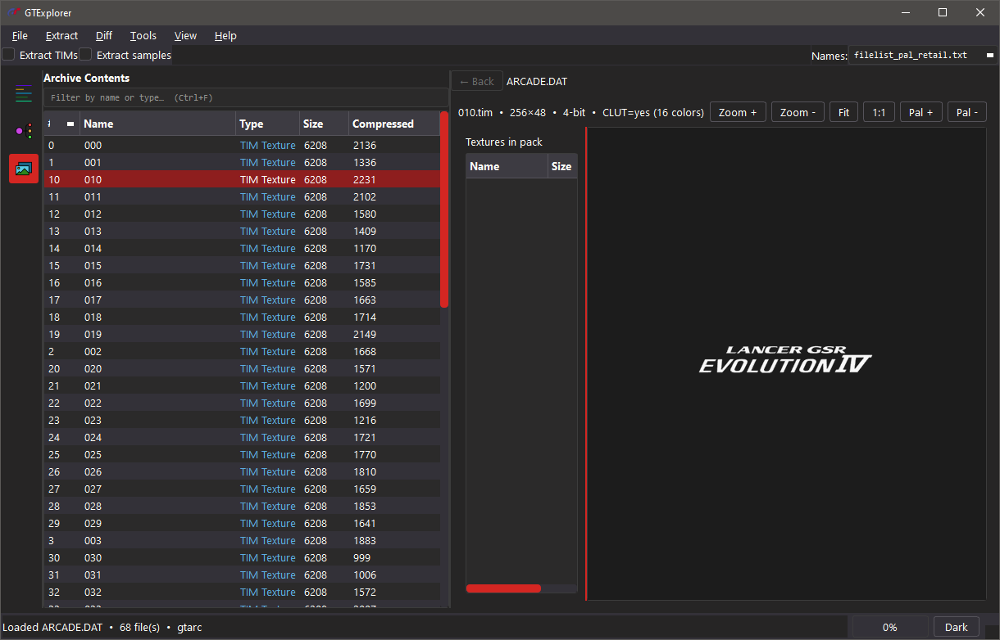
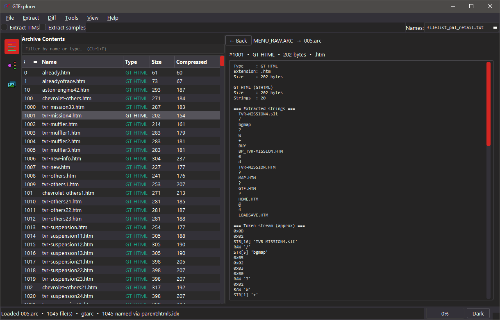
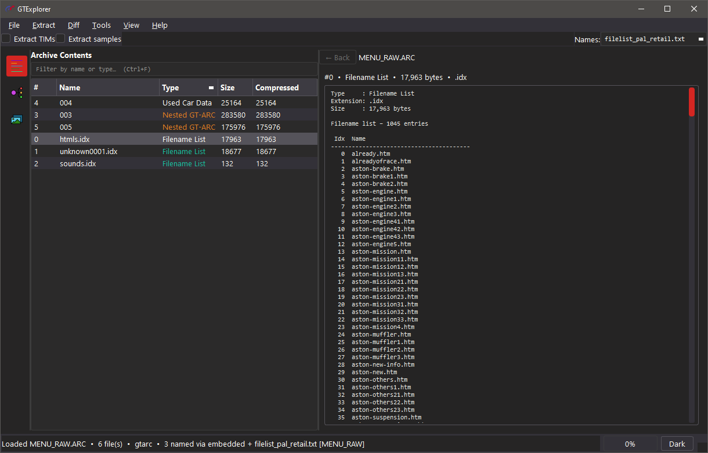
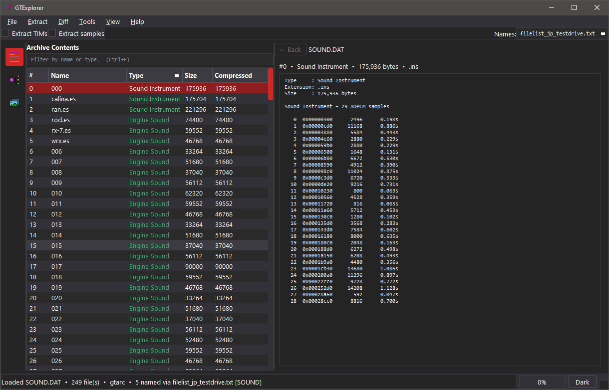
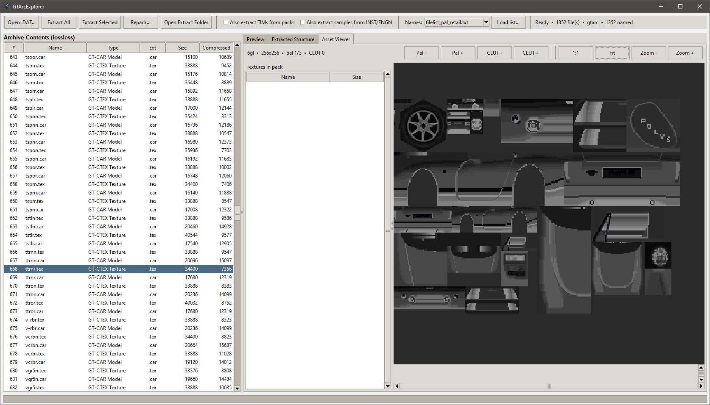

GTExplorer


Extractor and viewer for Gran Turismo 1 (PlayStation) archive files.





Features
- Extract GT-ARC / GT-ZIP archives
- Optional TIM pack expansion and rebuild
- Optional INST / ENGN sample expansion
- Region file lists for real asset names on extract
- Built-in Asset Viewer (TIM, TIM packs, GT-CTEX, GT-PS)
- Preview for sequences, filename lists, GTHTML, and car part tables (SPEC, COLOR, etc)
Note: Repacking is currently unfinished.
Requirements
- Python 3.8+
- Pillow (for the Asset Viewer)
- PyQt6 ≥ 6.4
pip install -r requirements.txt
Quick start
From the repo root:
python src/main.py
Windows:
runtool.bat
- Open… — pick a
.DAT/.ARC - (Optional) choose a file list so names are real instead of
000,001, … - Extract All or Extract Selected
Full guide → Usage
Archive kinds
| Kind | Detection | Examples |
|---|---|---|
| Standard GT-ARC | @(#)GT-ARC |
COURSE.DAT, CAR.DAT, SOUND.DAT, MENU_RAW.ARC |
| Compressed GT-ARC | Mangled @(#)GT-A / RC |
CARINF.DAT |
| Raw GT-ZIP | No ARC wrapper | GAMEFONT.DAT |
Detected types (summary)
| Content | Ext | Notes |
|---|---|---|
| TIM texture | .tim |
10 00 00 00 magic |
| TIM pack | .tpk |
Named TIM container |
| GT-PS / GT-CAR / GT-CTEX / GT-SKY | .ps / .car / .tex / .sky |
Models & textures |
| Nested GT-ARC | .arc |
Open with Open Nested ARC |
| GTHTML | .gthtml |
GT menu/script data |
| INST / ENGN / SEQG | .ins / .es / .seq |
Sound & sequences |
| SPEC, COLOR, TIRE, … | matching | Car part tables |
| Filename lists / text | .idx / .txt |
Name tables & messages |
Full table + TIM pack layout → Formats
File lists
Bundled region lists: src/gtarcexplorer/filelists/
Per-archive notes:
- ARCADE.DAT
- BG.DAT
- CAR.DAT
- CARCADE.DAT
- COURSE.DAT
- GAMEMENU
- MENU_IMG
- MENU_RAW
- PITMENU.DAT
- REPLAY.DAT
- SOUND.DAT
Known GT1 archives
See Known archives.
Project layout
src/
├── main.py
└── gtarcexplorer/
├── __init__.py
├── gui_qt.py
├── archive.py
├── detect.py
├── gtzip.py
├── filelist.py
├── filelists/
│ ├── filelist_pal_retail.txt
│ ├── filelist_usa_retail.txt
│ ├── filelist_usa_demo.txt
│ ├── filelist_jp_retail.txt
│ ├── filelist_jp_demo.txt
│ └── filelist_jp_testdrive.txt
├── tim_pack.py
├── tim_image.py
├── ctex.py
├── gtps.py
├── audio.py
├── spec.py
├── namelist.py
├── gthtml.py
└── replay.py
thm/
├── icon.ico
└── dark.qss
runtool.bat
requirements.txt
docs/
Notes
- Extract keeps original bytes (only GT-ZIP decompression when needed).
- Real names come from region file lists and, when present, embedded name lists.
- Asset Viewer needs Pillow; everything else works without it.
Credits
- pez2k / gt2tools — prior research into GT1 files
License
MIT — see LICENSE.